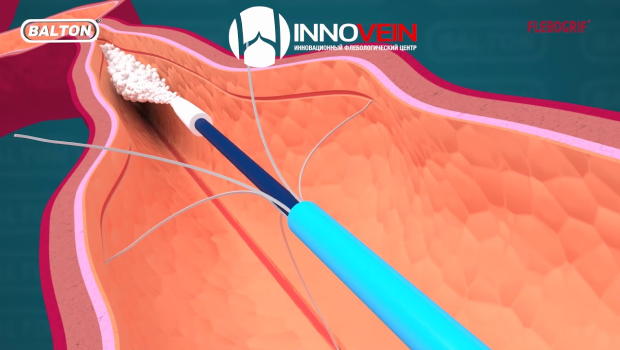

14.04.2022
19:00 Мск
Flebogrif: теперь в России
Нетермические методы лечения варикозной болезни — целый класс операций, один из представителей его — механохимическая облитерация с использованием системы Флебогриф теперь доступна в России. В рамках эфира мы покажем, что такое механохимия с использованием катетера с режущей кромкой, кому может быть полезен метод в рутинной практике
Приглашенные спикеры
- Владислав Семенюк
- Маркин Сергей Михайлович